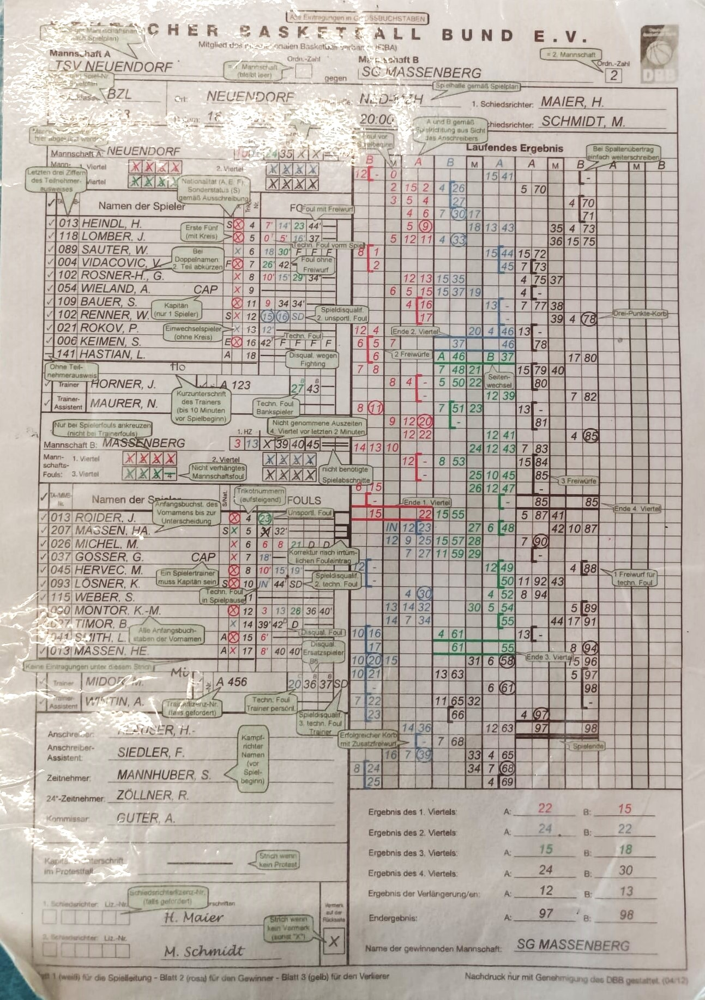

VEREIN
Willkommen bei der Basketballabteilung des KTB Kiel!
Als wichtiger und immer wachsender Bestandteil des Kieler Turnerbundes Brunswik von 1899 e.V. sehen wir uns als wichtige Sparte des Gesamtvereins, die Frauen-, Männer- und diverse Jugendteams beheimatet. Von der U12 bis hin zu den Senior*innen-mannschaften findet hier jede*r sein/ihr passendes Niveau und vor allen Dingen den Spaß am Sport mit dem runden, orangenen Lederball.
Alle Teams treten regelmäßig im spannenden Ligabetrieb auf lokaler und überregionaler Ebene an. Mit unserer Leidenschaft für den Sport und unserem unermüdlichen Einsatz streben wir danach, unsere Gemeinschaft immer weiter auszubauen und zu stärken. Nicht nur bei uns in der Basketballabteilung sondern auch beim gesamten KTB ist jede*r mehr als herzlich willkommen!
Schauen Sie bzw. schaut euch gerne auf unserer Website um, um mehr über unsere Teams, Trainingszeiten und Veranstaltungen zu erfahren. Wir freuen uns auf jede*n, der/die uns auf oder neben dem Spielfeld unterstützt, um gemeinsam die Faszination Basketball in Kiel zu erleben!
Du willst dem KTB beitreten? Folge einfach dem Link!
Hier geht es zu unseren Social-Media Kanälen
Wie mache ich Kampfgericht?
Das Kampfgericht besteht meist aus drei Personen:
Der Anschreiber
{kind=link}
Ein Anschreiber beim Basketball ist eine Person, die während eines Spiels bestimmte statistische Informationen protokolliert. Dazu gehören beispielsweise die Namen der Spieler, ihre Trikotnummern, Punkte und Fouls. Der Anschreiber arbeitet eng mit dem Schiedsrichter und dem Zeitnehmer zusammen, um sicherzustellen, dass alle Spielstatistiken korrekt erfasst werden.
Der Zeitnehmer

Der Zeitnehmer ist eine wichtige Position beim Basketballspiel. Seine Hauptaufgabe besteht darin, die Spielzeit zu überwachen. Der Zeitnehmer startet und stoppt die Spieluhr, wenn das Spiel unterbrochen wird, beispielsweise bei Fouls, Timeouts oder Einwürfen. Darüber hinaus hält der Zeitnehmer auch andere Zeitvorgaben im Auge, wie zum Beispiel die Spielviertel und die Pausen. Die präzise Zeitmessung ist entscheidend für den geregelten Ablauf eines Basketballspiels und trägt wesentlich zur Fairness und Spannung bei.
Der Wurfuhr-Zeitnehmer
{kind=link}
Der Wurfuhr Zeitnehmer ist speziell dafür verantwortlich, die Zeit zu überwachen, die ein Team hat, um auf den Korb zu werfen. Der Wurfuhr Zeitnehmer startet die Wurfuhr, sobald ein Team in Ballbesitz kommt, und setzt sie zurück, wenn das Team einen Korbwurf abgibt oder wenn ein Foul begangen wird. Eine präzise Zeitnahme ist wichtig, um sicherzustellen, dass die Teams die vorgegebene Zeit nicht überschreiten, was zu einem Ballverlust führen würde.